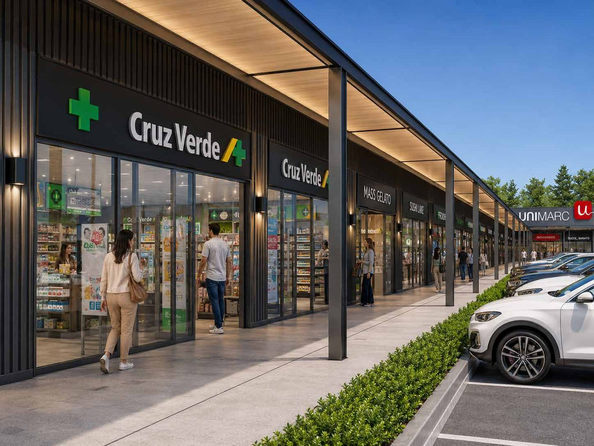
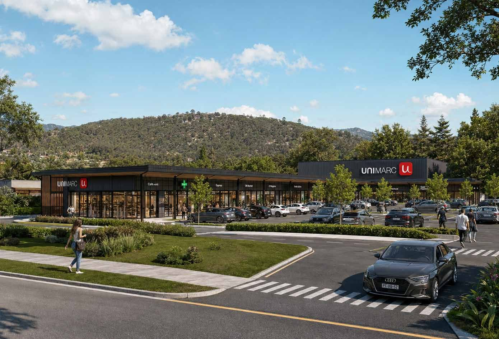
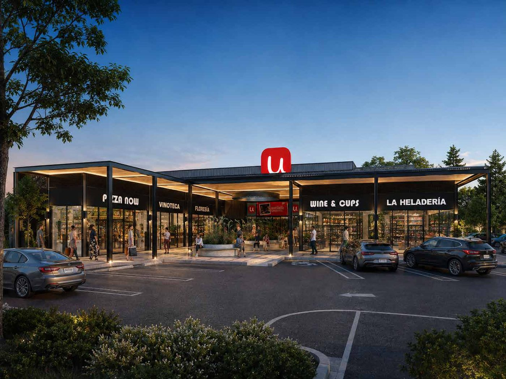

<!-- ════════════════════════════════════════════════════════════════════════
     SECCIÓN 11 — GALERÍA (CARRUSEL)
     ────────────────────────────────────────────────────────────────────
     Vista previa:  vista-previa/11-*.jpg
     Archivos que usa:
       · recursos/imagenes/aerea-grande.jpg
       · recursos/imagenes/banda-render.jpg
       · recursos/imagenes/descripcion-1.jpg
       · recursos/imagenes/descripcion-2.jpg
       · recursos/imagenes/galeria-1.jpg
       · recursos/imagenes/galeria-2.jpg
       · recursos/imagenes/locales.jpg
       · recursos/imagenes/ubicacion.jpg
     Nota: Carrusel de 8 imágenes con arrastre, flechas y puntos. Lo mueve el script de
           la sección 99.
     ════════════════════════════════════════════════════════════════════
     Pega TODO este archivo dentro de un bloque «HTML personalizado».
     Antes tiene que estar pegado UNA sola vez 00-estilos-base.html.
     ════════════════════════════════════════════════════════════════════════ -->
<style>
/* ── GALERÍA ──────────────────────────────────────────────────── */
.galeria{background:#F5F7F8;padding:clamp(60px,8vw,110px) 0}
.carrusel{position:relative;overflow:hidden;padding:34px 0;margin:-34px 0}
.pista{display:flex;gap:24px;transition:transform .78s var(--exp);will-change:transform}
.diapo{flex:0 0 68%;border-radius:var(--radio);overflow:hidden;
  opacity:.42;transform:scale(.93);
  transition:opacity .78s var(--exp),transform .78s var(--exp)}
.diapo.activa{opacity:1;transform:scale(1);box-shadow:0 26px 60px rgba(0,0,0,.2)}
.diapo img{width:100%;aspect-ratio:16/10;object-fit:cover;pointer-events:none}
.flechas{position:absolute;inset:0;display:flex;align-items:center;justify-content:space-between;
  pointer-events:none;padding:0 8px}
.flecha{pointer-events:auto;width:52px;height:52px;border-radius:50%;background:rgba(255,255,255,.94);
  display:grid;place-items:center;box-shadow:0 8px 24px rgba(0,0,0,.18);
  transition:background .3s var(--exp),transform .3s var(--exp)}
.flecha:hover{background:var(--rojo);transform:scale(1.07)}
.flecha:hover svg{stroke:#fff}
.flecha svg{width:18px;height:18px;stroke:var(--texto);stroke-width:2.2;fill:none}
.flecha[disabled]{opacity:.3;pointer-events:none}
.puntos{display:flex;justify-content:center;gap:10px;margin-top:36px}
.punto{width:34px;height:3px;background:#C4C4C4;border-radius:2px;transition:background .4s var(--exp)}
.punto.activo{background:var(--rojo)}

</style>

<!-- ════════════ GALERÍA ════════════ -->
<section class="galeria" id="galeria">
  <div class="contenedor">
    <div class="carrusel fade-up" id="carrusel">
      <div class="pista" id="pista">
        <div class="diapo"></div>
        <div class="diapo"></div>
        <div class="diapo"></div>
        <div class="diapo"></div>
        <div class="diapo"></div>
        <div class="diapo"></div>
        <div class="diapo"></div>
        <div class="diapo"></div>
      </div>
      <div class="flechas">
        <button class="flecha" id="ant" aria-label="Anterior">
          <svg viewBox="0 0 24 24"><polyline points="15 18 9 12 15 6"/></svg>
        </button>
        <button class="flecha" id="sig" aria-label="Siguiente">
          <svg viewBox="0 0 24 24"><polyline points="9 18 15 12 9 6"/></svg>
        </button>
      </div>
    </div>
    <div class="puntos" id="puntos"></div>
  </div>
</section>
